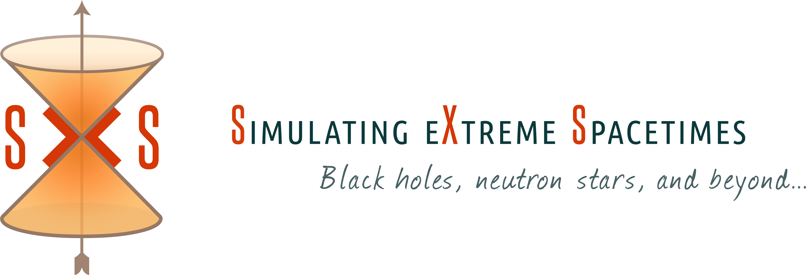
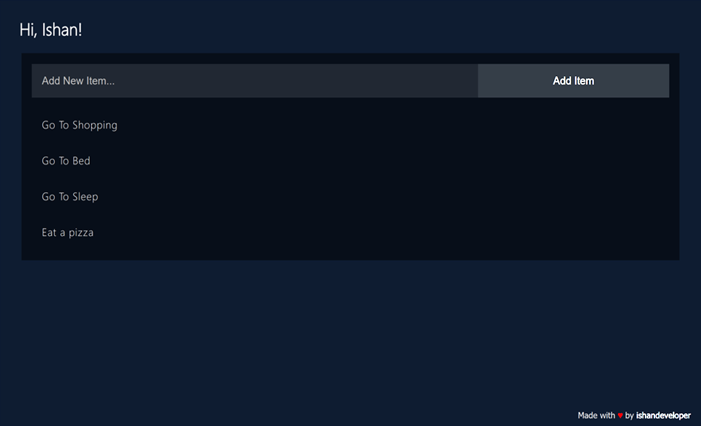

My Work.
Hello, I’m Tia Martineau, a sixth-year Ph.D. candidate at the University of New Hampshire. My research centers on the intricate dynamics of black hole-neutron star (BHNS) binary systems, where I explore topics such as gravitational waveforms, ejecta composition, and the formation of low-mass accretion disks in the aftermath of mergers. I’m enthusiastic about continuing my career in academia, where I hope to combine my passion for teaching with cutting-edge research in astrophysics. Thank you for visiting my site—feel free to explore my work and reach out!
Currently, I’m investigating key phenomena in BHNS mergers, including the threshold at which neutron stars undergo tidal disruption due to the spin of the black hole. This work has far-reaching implications, not only for understanding the nature of gravitational wave signals but also for probing the r-process nucleosynthesis that takes place in merger ejecta.

Density plot of a BHNS merger with a disrupting neutron star

Simulating eXtreme Spacetimes
In collaboration with Simulating eXtreme Spacetimes, I also contribute to the development of large-scale simulations that push the boundaries of what we know about these extreme systems. By automating simulation pipelines, I aim to facilitate easier access to high-fidelity waveform data for the scientific community.
Alongside my research, I have a passion for education. Between my time in undergrad and grad school, I was lucky enough to teach Honors-level physics to high school students, and I have previously worked with STEM programs such as Education Unlimited. Teaching allows me to share my love for physics and astronomy with the next generation, fostering curiosity and excitement in students of all backgrounds.

Timestamp Microservice
API

Task-To-Do
WEB APP
Outside of work, I find balance through baking, running, and art. I value creativity, whether it’s solving complex equations or crafting a new recipe, and it’s this blend of analytical and creative thinking that shapes my approach to both research and life.